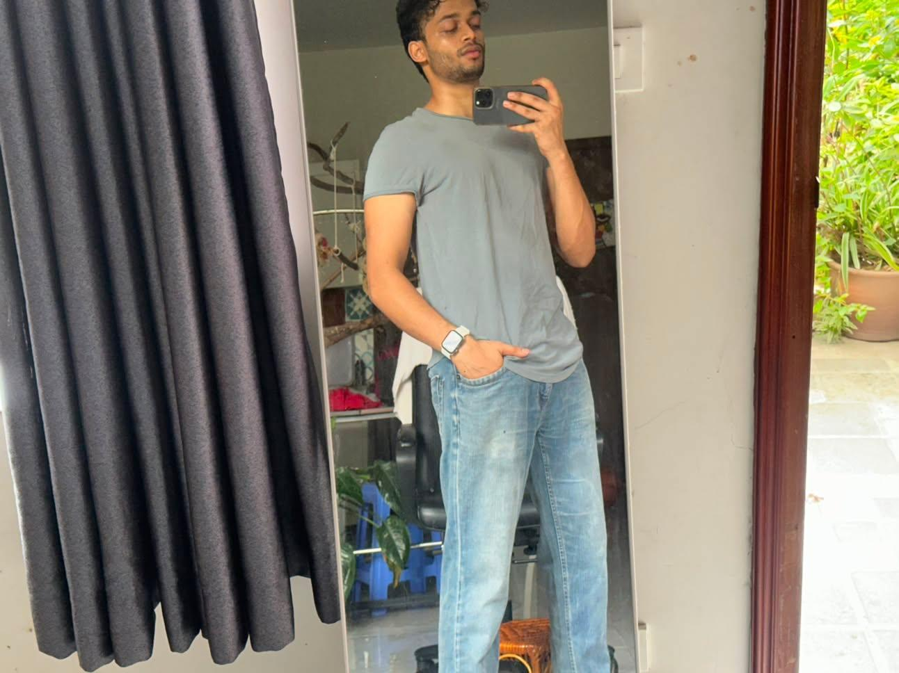

There is a peculiar beauty in the way life introduces us to the people who eventually alter it forever. It rarely arrives with certainty or announces itself with fanfare. More often, it disguises itself as an ordinary day, an ordinary conversation, or a fleeting encounter that seems destined to dissolve into memory.
For us, it began on 25 July 2025.
Not beneath constellations.
Not through some perfectly scripted coincidence.
Just two strangers who happened to end up in the same random Standoff lobby — @santoshvadapav and @sel. One match. One conversation. Nothing about it suggested permanence. It could have ended exactly where it began: another game closed, another stranger forgotten before the next Team Deathmatch loaded.
Instead...
It became us.
From the very beginning, there was something about you that quietly drew me in.
Your wit.
Your unmistakable sense of familiarity.
You carried yourself with the kind of presence that made conversations feel effortless, as though we had somehow skipped the awkwardness of being strangers altogether. I never possessed the courage to admit that aloud, so I disguised it behind teasing, sarcasm, and little words that could always be passed off as jokes if they were never returned.
One of those words was "cutie."
I remember calling you that, only for you to ask me not to. You told me you were with someone else (which you never were) and that it wouldn't be right. Looking back now, I admire the respect behind those words far more than I did at the time. You chose boundaries over convenience, and I think that says a great deal about the kind of man you have always been.
...although, between us, it was still a bleh move.
At the time, though, all I thought was that I had misunderstood everything.
So I quietly made up my mind.
"Right. I'm never texting this man again."
No dramatic farewell.
No confession.
No grand exit.
Just me, silently convincing myself that I'd judged the situation correctly and that walking away was probably the wiser choice.
Funny how confidently we write endings for stories that have barely begun.
Because the universe clearly had other plans.
You had, by the way, an extraordinary talent for testing my patience. You wanted to talk, yet somehow insisted on placing invisible filters around every conversation, delaying replies and what not. I still remember you asking me whether friendship could ever become soulmates while simultaneously pretending none of it meant anything.
You were impossible.
Infuriating.
And somehow...
Completely impossible to stop talking to.
Then came 1 August. Just one day after the infamous "cutie incident."
You messaged me again.
And despite all the dramatic speeches I'd rehearsed in my own head, I replied almost instantly.
So much for "never texting this man again."
I still remember those five days when I disappeared. You thought I had simply vanished. The truth was far less dramatic, you know it now — somewhere in the back of my mind, I had also convinced myself that, if you truly had someone else in your life, I didn't want to intrude where I no longer belonged.
Looking at us now, that version of our story feels almost impossible to believe.
Five days became three.
Three became one.
One became every day.
Every day became every hour.
And every hour became another reason to reach for my phone because something — anything — felt incomplete until I'd told you about it.
Sometimes it was an absolutely ridiculous meme.
Sometimes it was another "vaise vinchu..." conversation.
Sometimes it was one of my questionable dreams.
Sometimes it was nothing more than wanting to just have you around.
Somewhere along the way, talking to you stopped being a habit.
It became home.
Then came 27 April 2026.
The day friendship quietly stepped aside to make room for something infinitely more beautiful.
I don't return to that memory because it was extravagant.
I return to it because it was sincere.
Because it was ours.
I still remember the day before, when I was thoroughly annoyed with you over something that seems almost laughable now. Then, true to form, you woke up late — as the certified lazy ass you have been — and started sending your trail of messages of confessions until I finally came online.
I asked, "Are you sure about this?"
You replied, "Shut up and listen."
And then, at 1:15pm, the question arrived: "Will you be my girlfriend?"
I don't think any moment will ever erase the way my heart felt in those few seconds.
If someone asked me to choose the single happiest memory of this year, I think I'd still find myself returning to that afternoon.
Love, I've come to realise, is rarely discovered in extraordinary moments. It reveals itself in consistency, in patience, in showing up — in choosing the same person, over and over again, even when life becomes inconvenient.
What I admire most about you isn't merely your kindness, although there is plenty of that. It's your unwavering steadiness. Where my thoughts race ahead, yours remain composed. Where I imagine storms, you quietly become the calm that carries us through.
There were countless moments when I struggled to understand myself, yet somehow you always managed to understand me anyway.
You listened.
You reassured.
You stayed.
And perhaps that's the most beautiful thing about you. You have never been the sort of person to give up when things become difficult.
You communicate.
You mend.
You return.
You fight for us, never against us.
The more I try to describe you, the more language seems to fail me. You are every quiet prayer I never realised I had been making. Every impossible standard I never thought another person could meet.
And, while we're being completely honest... can we please acknowledge how ridiculously handsome my man is? Because I genuinely don't think I compliment you nearly enough.
Perhaps that's why "I love you" feels increasingly inadequate. Not because it isn't true. But because three little words could never possibly contain the comfort, admiration, gratitude, and joy that your existence has brought into my life.
I can roast you into absolute oblivion, and you'll somehow come back with an even better comeback instead of sulking. I can show you the loudest, messiest, most chaotic versions of myself, and somehow you still choose to stay.
If home were a person...
I'd know exactly where to find it.
In you.
Always.
Other moments, not yet given their own chapter.